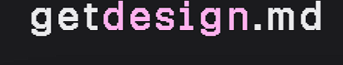
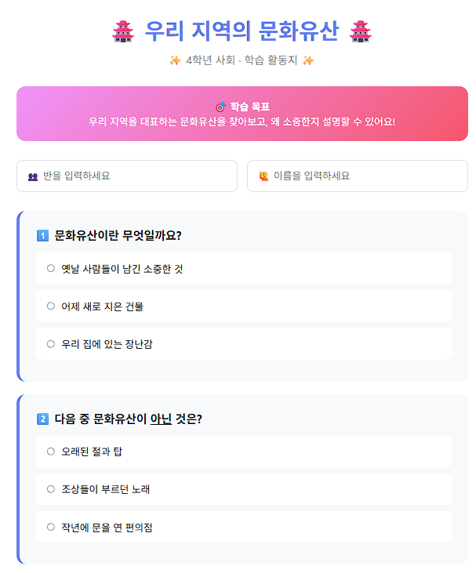
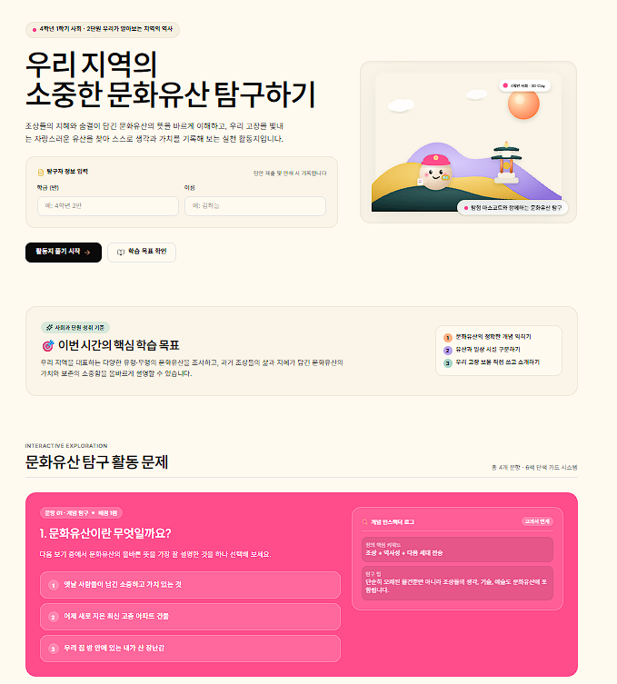
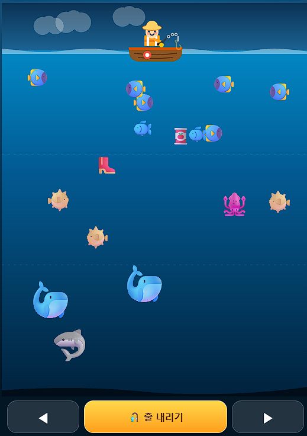
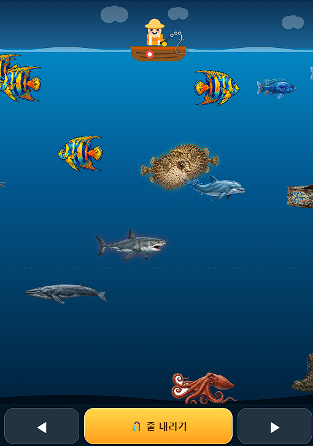
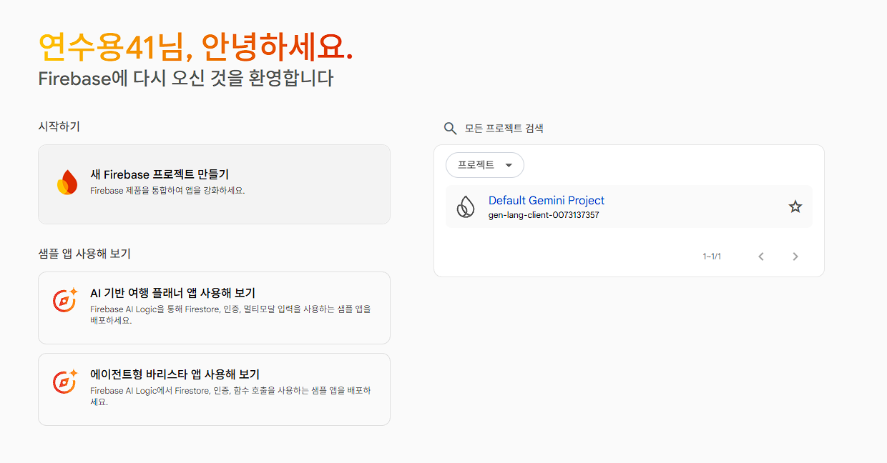
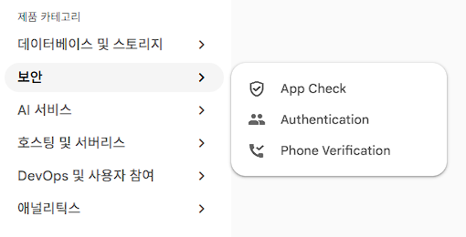
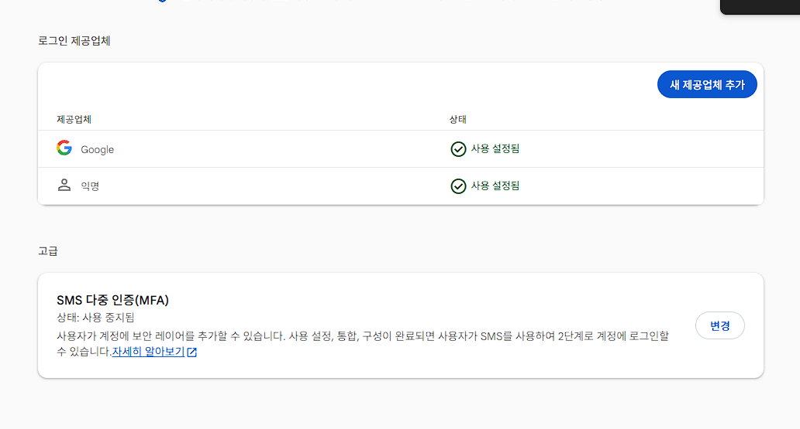
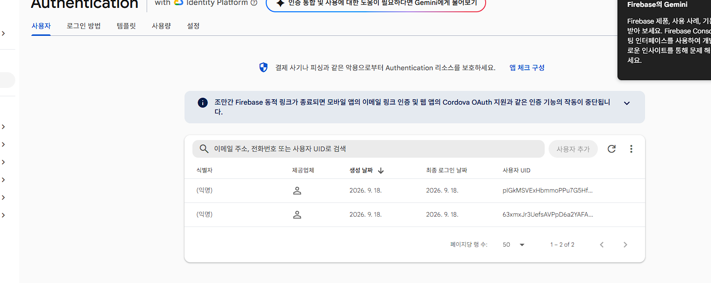

바이브코딩 심화 · 사다리 여덟 칸
이 페이지는 말로 앱을 만들어 인터넷 주소까지 올리는 길을 여덟 칸으로 나눠 놓은 안내서입니다. 브라우저만 있으면 되고, 계정은 전부 무료로 만듭니다.
어느 칸에서 멈춰도 괜찮습니다. 그 칸까지만 해도 수업에 바로 쓸 수 있게 만들어 두었습니다. 다만 순서는 건너뛰지 마세요. 앞 칸에서 만든 것이 다음 칸의 재료가 됩니다.
STEP 00
연수에서 쓰는 도구는 모두 무료입니다. 설치할 것도 없습니다. 다만 계정 세 개는 미리 만들어 두어야 합니다. 연수장에서 가입 메일을 기다리다 보면 첫 실습 칸을 통째로 놓칩니다.
내가 만든 앱을 인터넷 주소로 바꿔 주는 곳입니다. 4칸에서 폴더를 통째로 올리면 깃허브 무료 호스팅(GitHub Pages)이 주소를 하나 내어 줍니다. 그 주소를 QR로 만들어 학생에게 나눠 줍니다.
사용자명은 영문 소문자와 숫자, 하이픈만 됩니다. 이 이름이 앱 주소에 그대로 붙으니 짧게 짓습니다.
말로 앱을 만드는 작업실입니다. 2칸부터 7칸까지 가장 오래 머무는 화면입니다. 여러 파일로 이루어진 앱을 만들고 그 자리에서 배포까지 합니다.
반드시 개인 Gmail로 로그인합니다. 학교 계정은 막히는 경우가 많습니다.
학생 30명이 동시에 들어와 같은 순위표를 보게 해 주는 서버입니다. 이 사다리에서 쓰는 서버는 이것 하나뿐입니다. 5칸과 6칸에서 붙이고 7칸까지 그대로 이어 씁니다. 콘솔에서 스위치 하나만 켜면 되고 나머지는 AI가 붙여 줍니다.
AI Studio와 같은 개인 Gmail을 씁니다. 카드 등록 없이 무료 요금제(Spark) 그대로 씁니다.
STEP 01
계정 세 개가 준비됐습니다. 곧바로 만들기로 넘어가기 전에 한 칸만 더 들릅니다. 이 칸에는 실습이 없고, 시작하기 전에 판단해야 할 것 네 가지를 정리합니다. 무엇을 만들지 정하는 법, 도구를 고르는 기준, 고칠 때의 순서, 지켜야 할 선입니다. 이 네 가지를 먼저 잡아 두면 다음 칸부터 훨씬 덜 헤맵니다.
무엇을 만들까에서 출발하면 끝이 없습니다. 무엇이 불편한가에서 출발합니다. 만들기 전에 한 줄로 적습니다. 누가, 어디서, 무엇을, 몇 분 안에 하는지입니다. 예를 들면 이렇습니다. 4학년 25명이 전자칠판 앞에서 지도 퀴즈를 10분 안에 푼다. 이 한 줄이 프롬프트의 뼈대가 되고 동시에 이 정도면 됐다고 말할 기준선이 됩니다.
누가 · 어디서
4학년 25명이 전자칠판 앞에서 씁니다. 사람 수와 장소가 정해지면 화면 크기와 글자 크기가 따라 정해집니다.
무엇을
지도 퀴즈 하나입니다. 기능을 하나로 좁힙니다. 기능이 둘이 되는 순간 완성까지의 거리가 네 배가 됩니다.
몇 분 안에
10분입니다. 시간을 적어 두면 여기서 멈춰도 된다는 선이 생깁니다. 이 선이 없으면 계속 고치게 됩니다.
이 페이지는 앱을 식당에 빗댑니다. 홀은 학생이 보고 만지는 화면이고 주방은 선생님만 아는 저장과 계산입니다. 도구마다 열어 주는 문이 다릅니다. 홀만 손보는 도구가 있고 주방 열쇠까지 주는 도구가 있습니다. 이번 연수는 설치가 필요 없는 두 가지만 씁니다.
Canvas
Gemini 안에서 화면을 만들고 바꾸는 인테리어 앱입니다. 앱 파일 한 개를 빠르게 뽑을 때 좋습니다.
AI Studio
주방 열쇠에 해당하는 AI 사용 열쇠(API 키)까지 주는 작업실입니다. 여러 파일로 된 앱을 다룹니다.
설치형 도구
설계와 시공과 입주를 한꺼번에 맡기는 공사업체입니다. 학교 컴퓨터에 설치 권한이 없어 이번에는 빼 둡니다.
고르는 기준은 셋입니다. 학교 컴퓨터에 설치할 수 있는지, 무료로 쓰는 조건이 무엇인지, 한도가 잠기면 수업이 멈추는지를 봅니다.
한 번에 완성되지 않습니다. 대화로 다가갑니다. 처음에는 크게 한 번 만들고 그다음부터는 한 번에 하나씩만 고칩니다. 두 가지를 같이 고치면 어느 쪽이 화면을 망가뜨렸는지 알 수 없게 됩니다.
크게 한 번
처음 프롬프트에는 무엇을 만들지, 어떻게 보일지, 누구를 위한 것인지를 함께 적습니다.
백업 먼저
고치기 전에 파일을 복사해 index_백업.html로 남깁니다. 가장 값싼 안전장치입니다.
하나씩만
색을 바꿨으면 화면을 확인하고 그다음에 글자 크기를 바꿉니다. 순서를 지키면 되돌리기가 쉽습니다.
오류는 실패가 아니라 정보입니다. 빨간 글씨가 나오면 그대로 복사해 AI에게 붙여넣는 것이 가장 빠릅니다. 안 돼요라고 말하는 대신 어디까지 됐고 무엇을 눌렀을 때 무엇이 나왔는지를 말합니다. 세 번 시도해도 안 되면 백업 파일로 돌아갑니다. 지켜야 할 선도 분명합니다. 학생 이름과 얼굴은 공개 저장소에 올리지 않습니다.
오류 다루기
화면에 뜬 문구를 한 글자도 바꾸지 말고 복사해 붙여넣습니다. 요약해서 옮기면 AI도 짐작만 합니다.
학생 정보
학생은 회원가입 없이 학급 코드와 번호로 들어옵니다. 학급 코드는 수업이 끝나면 바꿉니다.
열쇠와 자료
API 키는 서버에만 둡니다. 교과서 지문이나 삽화가 들어간 앱은 교실 안에서만 씁니다.
STEP 02
이 칸의 주제는 만들기가 아니라 디자인 바꾸기입니다. 이미 있는 활동지를 그대로 두고 보이는 것만 바꿉니다. 문항도 정답도 손대지 않습니다.
1칸에서 도구를 고르는 기준을 잡았습니다. 이번 칸에서는 그 도구가 내놓는 결과물의 겉모습을 봅니다. 바이브코딩으로 만든 활동지는 누가 만들어도 비슷하게 생깁니다. 보라색 그라데이션 배경 위에 둥근 카드가 떠 있고, 제목마다 이모지가 붙고, 글자는 전부 가운데로 모입니다. 솜씨의 차이가 아닙니다. 아무도 디자인을 지시하지 않아 AI의 기본값이 그대로 나온 것입니다.
DESIGN.md를 건네면 그 기본값이 바뀝니다. DESIGN.md는 색과 글꼴, 간격과 화면 조각 규칙을 마크다운 한 장에 적어 AI에게 넘기는 디자인 명세서입니다. 식당으로 치면 홀의 인테리어 도면입니다. 도면을 주지 않으면 시공하는 쪽은 늘 하던 대로 꾸밉니다.
여기서 알아 둘 말이 하나 있습니다. 컨텍스트입니다. 우리말로는 맥락입니다. 프롬프트가 무엇을 해 달라는 요청이라면, 컨텍스트는 그 요청을 판단할 때 참고하는 배경입니다. 요청이 같아도 배경이 다르면 결과가 다릅니다.
DESIGN.md가 바로 그 배경입니다. 버튼 색을 일일이 지시하는 대신 배경 문서를 한 번 건네면, 그 뒤로는 AI가 알아서 그 결에 맞춥니다. 컨텍스트는 디자인만이 아닙니다. 학년과 과목, 교실 환경, 학생이 쓰는 기기, 우리 반 규칙이 모두 컨텍스트입니다. 1칸에서 적은 한 줄, 누가 어디서 무엇을 몇 분 안에 하는지가 이미 컨텍스트였습니다.
다만 대가가 있습니다. 배경을 주면 AI는 그 결을 따라 말하지 않은 것까지 채웁니다. 아래 두 화면을 보면 뒤쪽에는 삽화와 학습 목표 세 줄, 구역 이름이 새로 생겼습니다. 앞쪽에는 없던 것입니다. 반가울 때도 있고 원하지 않은 살이 붙을 때도 있습니다. 그래서 프롬프트에 문항과 정답은 바꾸지 말라는 문장을 함께 넣습니다. 컨텍스트는 넓게 주고, 건드리지 말 것은 좁게 못박습니다.
Gemini Canvas에 활동지 프롬프트를 넣어 앱 파일 한 개(index.html)를 만듭니다. 메모장에 저장할 때 세 가지를 확인합니다. 파일 형식은 모든 파일, 이름은 index.html, 인코딩은 UTF-8입니다. 저장한 파일을 더블클릭하면 브라우저에서 열립니다.
저장소의 demo/worksheet-before.html을 엽니다. 4학년 사회 "우리 지역의 문화유산" 활동지이고, 일부러 전형적으로 만든 표본입니다. 앞 단계에서 못 만들었거나 실패했다면 이 파일로 3단계부터 바로 이어갑니다. 디자인 실습이 만들기에서 막히면 안 되기 때문입니다.
왜 다 비슷한지 눈으로 확인합니다. 보라색 그라데이션 배경 · 20px 라운드 카드 · 짙은 그림자 · 제목마다 붙은 이모지 · 전부 가운데 정렬입니다. 맨 아래에는 "Made with ♥ by AI" 한 줄이 붙어 있습니다. 이 여섯 가지가 거의 항상 같이 나옵니다.
DESIGN.md가 무엇인지 확인합니다. 파일 하나를 프로젝트에 넣어 두고 AI에게 함께 건네면, AI가 그 규칙대로 화면을 만듭니다. 색을 하나하나 지시하지 않아도 됩니다.
getdesign.md에서 쓸 명세를 고릅니다. 브랜드 명세 70여 종을 미리보기하고 그대로 복사할 수 있습니다. 수업용으로는 대비가 뚜렷한 것을 권합니다. 글자가 작고 회색이 많은 명세는 전자칠판에서 잘 안 보입니다.

AI Studio나 Canvas에 활동지 HTML 전체와 DESIGN.md 전문을 함께 넣고 다시 만들어 달라고 합니다. 아래 프롬프트를 그대로 붙여 넣으면 됩니다.
두 파일을 탭 두 개에 나란히 띄워 비교합니다. 문항과 정답이 그대로인지부터 확인합니다.
BEFORE

AI의 기본값입니다. 그라데이션 띠, 둥근 카드, 제목 이모지, 가운데 정렬이 한꺼번에 나옵니다.
AFTER

문항은 그대로입니다. 색과 여백, 글꼴과 정렬이 바뀌었습니다. 여기에 더해 삽화와 학습 목표, 구역 이름이 새로 생겼습니다. 컨텍스트를 받은 AI가 빈자리를 채운 것입니다.
아래 DESIGN.md에 맞춰 이 활동지를 다시 만들어 주세요. 문항과 정답은 하나도 바꾸지 말고 보이는 것만 바꿔 주세요. 완성된 index.html 전체를 생략 없이 코드블록 하나로 주세요. --- DESIGN.md --- [여기에 getdesign.md에서 복사한 DESIGN.md 전문을 붙여 넣습니다] --- 활동지 HTML --- [여기에 활동지 HTML 전체를 붙여 넣습니다]
증상 디자인은 바뀌었는데 문제 번호나 보기 문장이 다른 말로 고쳐져 있습니다.
원인 내용을 바꾸지 말라는 문장을 프롬프트에서 빼먹었습니다. 그러면 AI는 더 좋게 다듬는 일까지 자기 몫으로 봅니다.
해결 위 프롬프트의 둘째 줄을 넣고 다시 요청합니다. 이미 망가졌다면 원본 파일을 다시 붙여 넣고 처음부터 시킵니다.
증상 받은 코드 끝이 잘려 있거나 중간에 생략을 뜻하는 표시가 들어가 있습니다.
원인 생략 없이 전체를 달라고 하지 않았습니다. 요청이 없으면 AI는 바뀐 부분만 보여 줍니다.
해결 "index.html 전체를 생략 없이 코드블록 하나로 주세요"라고 다시 말합니다. 그래도 잘리면 "이어서 끝까지 주세요"라고 한 번 더 요청합니다.
증상 브라우저에서 열었더니 한글이 알아볼 수 없는 기호로 보입니다.
원인 메모장에서 저장할 때 인코딩이 UTF-8이 아니었습니다.
해결 메모장에서 다른 이름으로 저장을 누르고 인코딩을 UTF-8로 바꿔 다시 저장합니다. 파일 형식은 모든 파일, 이름은 index.html입니다.
STEP 03
그림과 소리 같은 재료(에셋)를 만들어 앱에 붙입니다. 이 칸을 지나면 앱 파일 한 개가 폴더로 바뀝니다. 그 변화가 이 칸의 진짜 내용입니다.
2칸에서는 있던 것을 그대로 두고 겉모습만 바꿨습니다. 이번에는 없던 것을 새로 만들어 넣습니다. 앱 파일 한 개는 뼈대와 재료, 규칙이 한 장에 뭉쳐 있습니다. 짧을 때는 편합니다. 그런데 화면이 늘어나면 어디를 고쳐야 할지 알 수 없게 됩니다. 앱이 되려면 역할이 다른 것들이 각자 자리로 흩어져 폴더에 모여야 합니다.
식당과 같습니다. 인테리어와 조리대, 출입 규정이 한 방에 섞여 있으면 가게를 키울 수 없습니다. 아래는 낚시 게임의 실제 파일 목록입니다.
| 폴더와 파일 | 역할 | 식당 비유 |
|---|---|---|
| index.html | 들어오는 문. 뼈대 | 출입구 |
| assets/ | 재료. 그림과 소리 | 홀의 인테리어 |
| src/App.tsx | 엔진. 규칙과 계산이 도는 곳 | 주방의 조리대 |
| src/components/ | 화면 조각. 기록표 창과 도감 창 | 테이블과 메뉴판 |
| src/index.css | 디자인 규칙 | 인테리어 도면 |
| firestore.rules | 누가 읽고 쓸 수 있는지 | 출입 규정 |
AI가 파일을 여러 개 만들었다면 실수가 아닙니다. 앱이 되었다는 증거입니다.
BEFORE

AFTER

Canvas에서 AI Studio로 이사합니다. 파일을 여러 개 다루기 시작하는 순간이라 옮길 때가 된 것입니다. 채팅 규칙 칸(시스템 지시)에 "항상 index.html 전체를 코드블록 하나로, 생략 없이 주세요"를 적어 둡니다. 한 번 적어 두면 대화 내내 지켜집니다.
이미지 생성으로 재료를 한꺼번에 뽑습니다. 한 장씩 따로 만들면 그림체가 매번 달라집니다. 내려받은 파일은 assets 폴더에 넣고 이름을 영문 소문자로 바꿉니다. fish-red.png처럼 씁니다. 한글 파일명과 띄어쓰기는 나중에 주소에서 깨집니다.
AI에게는 그림을 붙여 넣지 않습니다. 경로를 알려 줍니다. assets/fish-red.png처럼 폴더 이름부터 쓰는 경로(상대경로)를 문장으로 적어 주면 AI가 그 자리에 그림을 끼웁니다.
효과음은 파일로 구하지 않습니다. 코드가 직접 소리를 만들게 합니다. 브라우저에 들어 있는 소리 기능(Web Audio)을 쓰면 내려받기와 파일명, 경로 문제가 한꺼번에 사라집니다.
먼저 그림을 뽑습니다. 재료 프롬프트의 원칙 네 가지가 그대로 들어 있습니다.
아래 조건을 모두 지켜서 낚시 게임에 쓸 물고기 그림을 만들어 주세요. 1. 스타일은 "납작한 벡터 일러스트, 굵은 검은 윤곽선"으로 모든 그림에 똑같이 적용합니다. 2. 배경은 흰색 단색으로 두고 그림자를 넣지 않습니다. 3. 물고기 네 종류를 한 장 안에 2x2로 배치합니다. 4. 이미지는 정사각형으로 만듭니다.
다음은 뽑은 그림을 앱에 끼우는 프롬프트입니다. 그림이 아니라 경로를 알려 줍니다.
그림 재료를 assets 폴더에 넣었습니다. 아래 경로를 코드에 그대로 써 주세요. assets/fish-red.png : 빨간 물고기 assets/fish-blue.png : 파란 물고기 assets/bg-sea.png : 바다 배경 지금 이모지로 그려진 부분만 위 그림으로 바꾸고, 게임 규칙은 하나도 바꾸지 마세요. index.html 전체를 생략 없이 코드블록 하나로 주세요.
마지막으로 효과음입니다. 파일을 구하는 대신 코드가 만들게 합니다.
효과음은 파일을 쓰지 않겠습니다. Web Audio로 코드가 직접 소리를 만들게 해 주세요. 물고기를 낚았을 때 짧은 상승음, 놓쳤을 때 짧은 하강음 두 가지면 충분합니다.
증상 코드는 바뀌었다는데 화면은 예전 그대로입니다.
원인 코드가 부르는 파일명과 실제 파일명이 다릅니다. 내려받을 때 이름 뒤에 숫자가 붙은 경우가 가장 많습니다.
해결 assets 폴더를 열어 파일명을 코드와 똑같이 맞춥니다. 폴더 위치도 index.html과 같은 자리인지 확인합니다.
증상 그림이 있어야 할 자리에 테두리만 있거나 아무것도 없습니다.
원인 대문자와 소문자가 다르거나 확장자가 다릅니다. Fish.PNG와 fish.png는 인터넷 주소에서 서로 다른 파일입니다.
해결 파일명을 전부 소문자로 바꾸고 확장자도 코드와 맞춥니다. 내려받은 파일이 png인지 jpg인지 먼저 확인합니다.
증상 앱 파일 한 개였던 것이 폴더와 파일 여러 개로 바뀌어 있습니다.
원인 실수가 아닙니다. 역할이 다른 것들이 자기 자리로 흩어진 것이고, 앱이 되었다는 증거입니다.
해결 그대로 두고 다음 칸으로 갑니다. 앱 파일 한 개면 깃허브 페이지, 폴더면 ai.studio 주소로 올립니다. 4칸 주소 만들기에서 두 갈래로 나눠 설명합니다.
STEP 04
여기가 연수의 정점입니다. 지금까지 만든 앱에 인터넷 주소를 답니다. 주소가 생기면 QR 하나로 학생 30명이 같은 앱을 엽니다. 앱의 형태에 따라 길이 둘로 갈리니 어느 쪽인지 먼저 판단합니다.
홀도 꾸몄고 재료도 넣었습니다. 그런데 지금 그 앱은 내 노트북에서만 열립니다. 옆자리 선생님 휴대폰으로는 열리지 않습니다. 파일이 그 노트북 안에만 있기 때문입니다.
식당으로 치면 홀은 다 꾸몄는데 건물에 주소가 없는 상태입니다. 아이들이 들어올 문이 아직 없습니다. 이 칸에서 그 문을 냅니다. 주방은 다음 칸에서 짓습니다.
문 내는 방법은 앱의 형태에 따라 갈립니다. 3칸에서 파일 한 개가 폴더로 늘어난 그 갈림입니다. 앱 파일 한 개짜리와 폴더로 이루어진 앱은 올리는 곳이 다릅니다. 그래서 두 길을 나란히 싣습니다.
공개 전에 한 번 멈춥니다. Public 저장소는 전 세계에 공개됩니다. 학생 이름과 얼굴 사진은 올리지 않습니다. 교과서 지문과 삽화가 들어간 앱은 교실 안에서만 씁니다.
판단 기준은 한 문장입니다. 메모장으로 열 수 있는 앱 파일 한 개면 A, AI가 폴더를 만들어 줬으면 B입니다.
메모장으로 열리는 index.html 한 개짜리 앱입니다. 깃허브 페이지를 켜서 주소를 받습니다. 주소가 내 것이고 오래 남습니다.
| 항목 | 값 | 비고 |
|---|---|---|
| Source | Deploy from a branch | 기본값 그대로 둡니다 |
| Branch | main | None에서 바꿉니다 |
| Folder | / (root) | 옆에 붙은 고르기 칸입니다 |
| 버튼 | Save | 누른 뒤 1분에서 3분 기다립니다 |
| 주소 | https://[아이디].github.io/[저장소명]/ | 끝 슬래시까지 붙입니다 |
AI가 src 폴더와 여러 파일을 만들어 준 앱입니다. 이런 앱은 깃허브에 올려도 그냥 파일 묶음으로만 보입니다. AI Studio Build 화면에서 바로 배포하는 쪽이 빠릅니다.
5칸부터 7칸까지는 모두 이 길로 갑니다. 세 칸 다 AI Studio Build로 만드는 폴더 프로젝트이기 때문입니다.
배포한 주소도 링크를 받은 사람이면 누구나 엽니다. 공개 범위는 길 A와 같습니다.
쉬운 길이지만 무료로 쓸 수 있는 양이 정해져 있습니다. Starter Tier로 결제 수단 없이 바로 올릴 수 있고, 여기에 더해 계정마다 무료 배포가 두 번 주어집니다. 그 범위를 넘으면 쓴 만큼 요금이 붙습니다. 한 학기 내내 열어 둘 앱이라면 길 A가 안전합니다. 공개 저장소로 올린 깃허브 페이지는 요금이 없습니다.
두 길이 모두 막히면 플랜 C가 있습니다. Netlify Drop에 내 앱 폴더를 통째로 끌어다 놓으면 몇 초 만에 주소가 나옵니다. 로그인도 필요 없습니다. 다만 주소가 무작위로 만들어지고 내 계정에 묶이지 않으니, 오래 쓸 주소는 길 A로 다시 냅니다.
이 칸에서 옮겨 적을 것은 프롬프트가 아니라 설정값입니다. Pages 화면에서 아래 세 줄을 그대로 맞추면 주소가 나옵니다.
Source: Deploy from a branch Branch: main Folder: / (root) 완성 주소: https://[아이디].github.io/[저장소명]/ [아이디]는 내 GitHub 사용자명, [저장소명]은 방금 만든 저장소 이름입니다.
증상 주소창에 붙여넣었는데 앱 대신 404 화면이 나옵니다.
원인 Save를 누른 직후에는 아직 간판이 켜지지 않았습니다. 켜지는 데 1분에서 3분 걸립니다.
해결 잠시 기다렸다가 새로고침합니다. 저장소 Actions 탭을 열어 pages build and deployment 작업에 초록 체크가 붙었는지 봅니다. 체크가 붙었는데도 404면 주소 끝 슬래시와 저장소 이름 철자를 확인합니다.
증상 글자와 버튼은 나오는데 배경 그림이나 캐릭터 자리가 비어 있습니다.
원인 파일을 하나씩 올려 assets 폴더 구조가 깨졌거나 파일명 대소문자가 코드와 다릅니다. 내 노트북은 대소문자를 가리지 않지만 서버는 가립니다.
해결 저장소 목록에 assets 폴더가 보이는지 확인합니다. 없으면 폴더째 다시 올립니다. 파일명은 영문 소문자로 통일하고 코드 안 경로와 한 글자씩 맞춥니다.
증상 Settings에서 Pages를 열었는데 main을 고를 칸이 보이지 않거나 유료 안내가 뜹니다.
원인 저장소를 Private로 만들었습니다. 무료 계정은 Private 저장소에서 깃허브 페이지를 켤 수 없습니다.
해결 Settings 맨 아래 Danger Zone에서 Change visibility를 눌러 Public으로 바꿉니다. 바꾸기 전에 학생 이름과 얼굴 사진, 교과서 지문과 삽화가 파일 안에 없는지 먼저 확인합니다.
STEP 05
게임을 하나 만들고 점수를 서버에 올립니다. 링크만 보내면 다른 사람이 같은 순위표를 봅니다. 내가 점수를 올리는 순간 상대 화면의 숫자가 새로고침 없이 바뀝니다. 여기까지 해 두면 학급 대항 순위표를 수업 시간에 그대로 띄울 수 있습니다.
4칸에서 앱에 주소가 생겼습니다. 홀은 다 꾸몄고 문도 났습니다. 그런데 주방이 아직 없습니다. 지금 이 앱이 기억하는 곳은 브라우저 안 저장 공간(localStorage)뿐입니다. 점수는 각자의 기기에만 남고 옆 사람 화면에는 보이지 않습니다. 이번 칸에서 그 주방을 짓습니다. 달라지는 점은 두 가지입니다. 실시간과 동시 접속입니다. 서버에 붙은 앱은 누가 점수를 올리면 내 화면의 순위표가 저절로 바뀝니다. 30명이 같은 순간에 같은 화면을 봅니다.
또 하나 다른 점이 있습니다. 이번에는 콘솔에 들어가 설정을 손으로 만지지 않습니다. AI Studio Build에게 말로 붙여 달라고 합니다. 주방을 직접 짓는 대신 주방을 붙여 달라고 부탁하는 셈입니다. 연결과 인증, 규칙 파일까지 대화만으로 만들어집니다.
firestore.rules 파일과 실시간으로 화면을 갱신하는 코드까지 만듭니다.기록을 기록표로 보여줘. 로그인은 불특정 다수가 그냥 들어오면 되게 해줘. 파이어베이스 붙여줘
순위표에 무엇이 보일지까지 정해 주면 화면이 한 번에 정리됩니다. 위 문장 다음에 이어서 넣습니다.
순위표에는 별명과 점수, 달성 시각 세 가지만 보여줘. 점수가 높은 순으로 열 줄까지 띄워줘. 새 기록이 들어오면 새로고침 없이 바로 바뀌게 해줘.
(익명) 줄이 쌓입니다.증상 게임은 열리는데 점수를 올리려는 순간 화면이 멈추고 auth/admin-restricted-operation 이 나옵니다.
원인 Firebase 콘솔에서 익명 로그인을 아직 사용 설정하지 않았습니다. 앱은 손님을 들여보내려 하는데 문이 잠겨 있는 상태입니다.
해결 콘솔에 들어가 익명을 켭니다. 아래 네 장면을 순서대로 따라갑니다.
| 순서 | 캡처 | 보는 것 |
|---|---|---|
| ① | Firebase 콘솔 홈 | 프로젝트 목록에 Default Gemini Project가 이미 있습니다. AI Studio Build가 만들어 둔 것이므로 새로 만들 필요가 없습니다. |
| ② | 왼쪽 메뉴 | 제품 카테고리를 펼치고 보안을 고른 다음 Authentication을 누릅니다. |
| ③ | 로그인 방법 탭 | 제공업체 목록에서 익명이 사용 설정됨으로 바뀌어 있어야 합니다. |
| ④ | 사용자 탭 | 접속자가 익명으로 쌓입니다. 학생 한 명이 들어올 때마다 한 줄씩 늘어나면 성공입니다. |




증상 게임은 끝까지 되는데 순위표가 비어 있습니다. 오류 문구도 보이지 않습니다.
원인 firestore.rules 파일이 서버에 배포되지 않았습니다. 파일만 있고 배포가 안 되면 읽기와 쓰기가 기본으로 막힙니다.
해결 규칙을 서버에 배포합니다. Build에 규칙을 배포해 달라고 말하거나 Firebase 콘솔의 Firestore 규칙 탭에서 게시를 누릅니다.
증상 다른 사람 화면에는 점수가 올라가는데 내 탭에서만 기록이 남지 않습니다.
원인 익명을 켜기 전에 열어 둔 탭이라 인증 객체가 null 로 남았습니다. 점수가 서버로 가지 않고 내 브라우저 안에만 저장됩니다.
해결 그 탭에서 F5를 눌러 새로고침합니다. 그러면 인증을 다시 받습니다.
이 세 가지가 이 칸의 진짜 교재입니다. AI가 다 해 줘도 콘솔에서 사람이 눌러야 하는 스위치가 남습니다. 그래서 1칸에서 말한 디버깅 마인드셋이 여기서 쓰입니다. 오류는 실패가 아니라 정보입니다. 빨간 글씨가 뜨면 요약하지 말고 그대로 복사해 AI에게 붙여넣습니다. 위 세 가지도 그렇게 찾아낸 것들입니다.
STEP 06
월 달력을 띄우고 날짜 칸을 누르면 사진 한 장을 올립니다. 하루에 한 장만 들어가고 모두가 같은 캘린더를 봅니다. 학급 일기와 급식 기록, 학년 행사 사진첩으로 바로 씁니다. 5칸까지 한 것을 모아 쓰는 종합 과제입니다.
5칸에서 서버에 올린 것은 점수 한 줄이었습니다. 이번에는 사진 한 장입니다. 글자보다 무겁고 규칙도 더 필요합니다. 하루에 한 장이라는 제한과 사진 크기라는 규격을 먼저 정해야 앱이 무너지지 않습니다. 주방에 들이기 전에 재료를 손질해 두는 셈입니다.
여기서 중요한 사실이 하나 있습니다. 무료 조건이 설계를 결정합니다. 사진을 통째로 맡아 주는 Firebase Cloud Storage는 2026년 2월 3일부터 결제 계정이 있어야 만들 수 있습니다. 무료로는 쓸 수 없습니다. 그래서 다른 길로 갑니다. 사진을 브라우저 안에서 정사각형 512픽셀 JPEG로 줄입니다. 품질은 0.7로 낮춥니다. 그렇게 줄인 사진을 문자열로 바꿔 Firestore 문서에 저장합니다.
계산이 맞는지 봅니다. 문서 하나에 들어갈 수 있는 크기는 1MB입니다. 512픽셀로 줄인 사진은 60KB에서 110KB 사이입니다. 여유가 충분합니다. 정해진 규격을 지키라는 말이 취향이 아니라 조건이라는 것을 학생에게도 이 숫자로 설명할 수 있습니다.
월 달력 화면을 만들어 줘. 날짜 칸을 누르면 사진을 한 장 올릴 수 있게 해줘. 조건 네 가지를 꼭 지켜줘. 1. 한 날짜에는 사진 한 장만 저장한다. 이미 있으면 바꿀지 먼저 물어본다. 2. 올리기 전에 브라우저에서 정사각형 512픽셀 JPEG로 줄이고 품질은 0.7로 한다. 3. Cloud Storage를 쓰지 말고 줄인 사진을 문자열로 바꿔 Firestore 문서에 저장한다. 4. 얼굴이 나온 사진은 올리지 않는다는 안내 문구를 업로드 칸 위에 항상 보이게 띄운다. 파이어베이스는 이미 붙어 있는 프로젝트를 그대로 써줘.
증상 파일을 고르면 잠시 멈췄다가 아무 일도 일어나지 않거나 저장에 실패했다는 문구가 뜹니다.
원인 사진 줄이기를 건너뛰고 원본을 그대로 올려 문서 한도 1MB를 넘겼습니다. 원본 사진은 문서 한 개에 담기에는 큽니다.
해결 코드가 원본을 바로 올리고 있지 않은지 확인합니다. 올리기 전에 512픽셀로 줄이는 단계를 넣어 달라고 다시 말합니다.
증상 달력에 올린 사진이 뭉개져 보입니다. 글씨가 찍힌 사진은 읽기 어렵습니다.
원인 512픽셀과 품질 0.7이 무료 조건 안에서 쓸 수 있는 상한입니다. 화질이 아니라 한도에 맞춘 값입니다.
해결 더 키우면 문서 한도에 걸려 저장이 통째로 실패합니다. 화질 대신 찍는 방식을 바꿉니다. 가까이에서 밝게 찍고 글씨가 든 장면은 피합니다.
증상 학생 얼굴이 나온 사진이 캘린더에 올라와 있습니다. 링크를 아는 사람은 누구나 봅니다.
원인 이 앱은 링크만 있으면 들어올 수 있는 공개 앱입니다. 얼굴 사진은 처음부터 올리면 안 되는 자료입니다.
해결 먼저 그 사진을 지웁니다. 그다음 규칙을 다시 안내하고 필요하면 링크를 새로 만듭니다.
STEP 07
지금까지는 내가 AI에게 물어 앱을 만들었습니다. 이번에는 앱이 스스로 AI에게 묻습니다. 학생이 힌트 버튼을 누르면 앱이 대신 물어보고 한 문장을 받아 옵니다. 열쇠를 안전한 곳에 두는 방법이 이 칸의 전부입니다.
앱이 스스로 AI에게 물어보려면 열쇠가 필요합니다. 그 열쇠가 API 키입니다. 이 열쇠를 앱 파일 안에 적어 두면 주소를 아는 사람은 누구나 꺼내 갑니다. 인터넷에 올린 파일은 화면에 안 보여도 누구나 내용을 볼 수 있습니다. 남이 쓴 만큼 내 한도가 줄고 요금이 붙기도 합니다.
그래서 열쇠는 홀에 두지 않고 주방이 보관합니다. 앱은 질문만 주문서에 적어 주방에 넘깁니다. 주방이 열쇠를 꺼내 Gemini를 부르고 답을 받아 홀로 내보냅니다. 열쇠는 주방 밖으로 나가지 않습니다.
여기서 반가운 소식이 있습니다. AI Studio Build로 만든 앱은 이 주방을 이미 갖추고 있습니다. Gemini를 쓰는 앱을 만들면 AI Studio가 키를 서버 쪽 비밀값으로 알아서 넣어 둡니다. 코드에는 앱이 AI를 직접 부르는 것처럼 적히지만, 실제 호출은 서버가 가로채 대신 보냅니다. 키는 학생 화면으로 한 번도 내려가지 않습니다.
그렇다고 몰라도 되는 것은 아닙니다. 앱을 ZIP으로 내려받아 다른 곳에 올리는 순간, 키를 숨기는 일은 다시 내 몫이 됩니다. 그때는 그 서버의 환경변수에 GEMINI_API_KEY 를 직접 넣어야 합니다. 도구가 대신 해 주는 일과 내가 책임질 일을 구분하는 것, 그것이 이 칸의 진짜 내용입니다.
모델은 두 가지 중에서 고릅니다. 무료로 쓸 수 있는 횟수가 다릅니다.
| 모델 | 분당 | 하루 | 쓰임 |
|---|---|---|---|
gemini-2.5-flash |
10회 | 250회 | 답이 길고 꼼꼼합니다. 교사가 자료를 만들 때 씁니다. |
gemini-2.5-flash-lite |
15회 | 1,000회 | 짧은 힌트에 알맞습니다. 우리 반 앱은 이쪽으로 충분합니다. |
한 학급 25명이 한 수업에서 세 번씩 눌러도 75회입니다. flash-lite의 하루 1,000회 안에 넉넉히 들어갑니다.
문제 화면에 힌트 버튼을 하나 붙여줘.
구조는 이렇게 해줘.
1. 앱은 API 키를 갖지 않는다. 코드 어디에도 키 문자열을 적지 않는다.
2. 앱은 지금 문제를 질문으로 만들어 서버에 보내기만 한다.
주문서는 {action:"ai", question} 형태로 한다.
3. 서버가 키를 갖고 있고 서버가 Gemini를 부른다.
모델은 gemini-2.5-flash-lite 를 쓴다.
4. 돌아온 답은 한 문장으로 줄여서 버튼 아래에 띄운다.
정답은 말하지 말고 어디를 다시 보라고만 알려준다.
증상 발급받은 키를 붙여넣을 칸을 찾지 못합니다.
원인 AI Studio Build에서는 붙여넣을 칸이 없는 것이 정상입니다. 키를 도구가 알아서 넣어 둡니다.
해결 비밀값 패널에서 키가 들어가 있는지만 확인합니다. 직접 발급받아 코드에 적지 않습니다. ZIP으로 내려받아 다른 곳에 올릴 때만 그 서버의 환경변수에 GEMINI_API_KEY 를 넣습니다.
증상 수업 후반부터 힌트가 돌아오지 않습니다. 한도를 넘겼다는 문구가 보입니다.
원인 무료 횟수는 한 학급이 한 수업에서 쓰는 것을 기준으로 잡혀 있습니다. 여러 학급이 같은 키를 하루에 몰아 쓰면 걸립니다.
해결 모델을 gemini-2.5-flash-lite 로 바꿉니다. 하루 1,000회까지 늘어납니다. 버튼을 연달아 못 누르게 막아 두면 더 안전합니다.
증상 키를 캡처에 넣었거나 코드에 붙였다가 지웠습니다. 쓴 적 없는 사용량이 올라가 있습니다.
원인 한 번 밖으로 나간 키는 지워도 돌아오지 않습니다. 저장소 기록과 캡처 파일에 그대로 남습니다.
해결 그 키를 즉시 삭제하고 새로 발급받습니다. 키는 공유와 캡처, 코드 삽입이 모두 금지입니다. 있어야 할 곳은 서버 쪽 비밀값 한 곳뿐입니다.
SAFETY
여기까지 오면 내 앱에 주소가 생깁니다. 주소가 생긴다는 것은 누구나 열어 볼 수 있다는 뜻입니다. 학생에게 나눠 주기 전에 네 가지를 확인합니다.
어려운 판단은 없습니다. 무엇을 어디에 두느냐의 문제입니다. 열쇠는 주방에 둡니다. 학생 정보는 애초에 받지 않습니다. 남의 자료는 교실 밖으로 내보내지 않습니다.
API 키
코드에 적지 않고 화면에 띄우지 않으며 캡처해서 공유하지 않습니다. 키는 서버 쪽 비밀값으로만 둡니다. 새어 나갔다면 그 키를 삭제하고 새로 만듭니다.
개인정보
학생 이름과 얼굴 사진은 공개 저장소에 올리지 않습니다. 학생은 회원가입 없이 학급 코드와 번호로 들어옵니다. 서버에는 번호와 별명, 점수만 남깁니다.
저작권
교과서 지문이나 삽화가 들어간 앱은 교실 안에서만 씁니다. 인터넷에 공개하지 않습니다. 수업에 쓰는 것과 누구나 볼 수 있게 두는 것은 다른 일입니다.
공개 범위
Public 저장소는 전 세계에 공개됩니다. 주소를 아는 사람이면 누구나 들어옵니다. 학급 코드는 수업이 끝나면 바꿉니다.
GLOSSARY
낯선 말은 일곱 개뿐입니다. 식당 비유 하나로 전부 이어집니다. 뜻이 헷갈리면 이 표로 돌아옵니다.
| 용어 | 한 줄 뜻 | 식당 비유 | 이 페이지 어디서 |
|---|---|---|---|
| API | 프로그램끼리 주고받는 정해진 요청과 응답 양식입니다. | 주문서 | 5칸에서 점수를 Firestore에 저장하고 읽어 오는 자리 |
| 프론트엔드 | 학생이 보고 만지는 화면입니다. | 홀 | 2칸과 3칸 |
| 백엔드 | 선생님만 아는 저장과 계산입니다. | 주방 | 5칸과 6칸 |
| 호스팅 | 파일을 인터넷 주소로 켜 두는 것입니다. | 건물과 간판 | 4칸 |
| 토큰 | AI가 글을 세는 단위입니다. 한글 한두 자가 토큰 하나쯤이고 요금과 한도의 기준이 됩니다. | 주방이 재료를 세는 단위 | 7칸의 무료 한도 |
| 에이전트 | 목표를 주면 스스로 여러 단계를 밟아 끝까지 일하는 AI입니다. | 장보기부터 설거지까지 알아서 하는 직원 | 5칸의 AI Studio Build |
| DESIGN.md | 마크다운 한 장에 담은 디자인 명세서입니다. AI에게 건네면 그 감성으로 화면을 만듭니다. | 인테리어 도면 | 2칸 |
LIMITS
이 사다리에서 쓰는 도구는 전부 무료 범위 안에 있습니다. 다만 도구마다 하루에 쓸 수 있는 양이 정해져 있습니다. 2026년 9월 기준으로 확인한 값입니다.
| 도구 | 무료로 되는 범위 | 알아 둘 점 |
|---|---|---|
| Gemini API | 무료 등급은 Flash 계열만 됩니다. gemini-2.5-flash는 분당 10회에 하루 250회입니다. gemini-2.5-flash-lite는 분당 15회에 하루 1,000회입니다. |
모델 이름을 어느 쪽으로 적었는지에 따라 한도가 네 배 차이 납니다. |
| Firebase Spark(무료) | 결제 수단 없이 Firestore와 Hosting, Authentication을 씁니다. Firestore는 하루에 읽기 50,000회, 쓰기 20,000회, 삭제 20,000회까지 됩니다. 저장 공간은 1GB입니다. | 5칸과 6칸이 이 범위 안에서 돕니다. |
| Firebase Cloud Storage | 파일 업로드를 맡는 자리입니다. 2026년 2월 3일부터 버킷 생성에 결제 계정이 필요합니다. | 이 페이지에서는 쓰지 않습니다. 6칸의 사진은 줄여서 Firestore에 문자열로 넣습니다. |
| GitHub Pages | Public 저장소면 무료입니다. | 4칸의 주소 만들기가 여기서 끝납니다. |
숫자가 커 보이지만 한 학급이 한 수업에서 쓰는 양은 이 표의 가장 작은 칸에도 들어갑니다. 실제 계산은 7칸 앱이 AI를 부르게에 적어 두었습니다.
BEYOND
이 페이지는 브라우저에서만 되는 도구로 사다리를 짰습니다. 학교 컴퓨터에 설치 권한이 없고 한도가 잠기면 수업이 그 자리에서 멈추기 때문입니다.
바깥에는 설치형 통합 개발 도구가 있습니다. Claude Code, Codex CLI, Antigravity, Cursor, Windsurf, Cline 같은 것들입니다. 이 도구들은 폴더 만들기부터 주소 내기까지 한 문장으로 맡길 수 있습니다. 대신 설치가 필요하고 무료 조건이 도구마다 다릅니다. 주간 한도로 잠기는 경우도 있습니다. 그래서 이번 연수에서는 시연하지 않고 이름만 알려 드립니다.
여기서 익힌 원리는 그 도구들에서도 그대로 통합니다. 홀과 주방, 주문서와 건물입니다. 화면을 만들고 저장할 곳을 정하고 둘을 정해진 양식으로 잇고 주소를 내는 순서는 어느 도구에서나 같습니다. 도구가 바뀌면 손이 덜 갈 뿐이지 순서가 바뀌지는 않습니다.